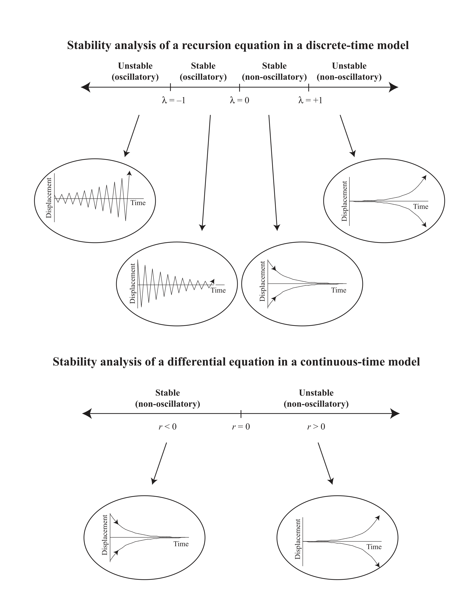

This workshop will introduce participants to the logic behind modeling in biology, focusing on developing equations, finding equilibria, analyzing stability, and running simulations.Techniques will be illustrated with the software tools, Mathematica and Maxima. This workshop was held in two parts: January 14 and January 16, 2020.
Technical
EN
Author
Affiliation
Sarah P. Otto
University of British Columbia
Published
January 14, 2020
In this workshop, I introduce various modelling techniques, using mostly ecological and evolutionary examples, with a focus on how computer software programs can help biologists analyze such models.
Content
Part 1: Classic one-variable models in ecology and evolution Part 2: Equilibria and their stability Part 3: Beyond equilibria Part 4: Example of building a model from scratch Part 5: Extending to models with more than one variable Part 6: Another example of building a model from scratch
Software
In my research, I primarily use Mathematica, which is a powerful software package to organize and conduct analytical modelling, but it is not free (at UBC, we have some licenses available). I will also show some example code and provide translation of most of what I present in a free software package called Maxima.
Mathematica installation
There is a free trial version that you can use for 15 days, if you don’t have a copy (click here to access), or you can buy a student version online. If you want to make sure that all is working, copy the code below, put your cursor over each of the following lines and press enter (on some computers, “enter” is a separate button, on others, press “shift” and “return” at the same time):
You should see (a) \(3x^2\), (b) a plot of a line, (c) \({{x[t]->A^t x0}}\), and (d) \(\frac{e^\frac{-x^2}{2}}{\sqrt{2\pi }}\).
Maxima installation:
On a Mac, install using the instructions here. For other file systems, download here.
Maxima testing
When you first open Maxima, it will give you a choice of GUIs, chose wxMaxima. Once wxMaxima is launched type this command and hit return to see if it answers 4:
2+2;
If it doesn’t, then scan the installation document for the error that you run into.
If it does return 4, then type in and enter these commands:
This PDF was generated from the Mathematica notebook linked above. It doesn’t include dynamic plots, but it’s a good alternative if you want to print out or have a quick reference at hand.

Stability analysis of a recursion equation in a discrete-time model.
Other resources
An Introduction to Mathematical Modeling in Ecology and Evolution(Otto and Day 2007).